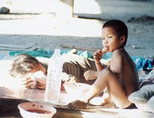

| วิถีแห่งพุทธะ
สู่สังคมความเป็นหนึ่งเดียวกัน คอลัมน์ จิตวิวัฒน์ โดย ประสาน ต่างใจ แผนงานพัฒนาจิตเพื่อสุขภาพ มูลนิธิสดศรี-สฤษดิ์วงศ์ สนับสนุนโดย สำนักงานกองทุนสนับสนุนการสร้างเสริมสุขภาพ(สสส.) NewConsciousness@thainhf.org |
|
วาระเร่งด่วนข้อหนึ่งของอียู(European Union) เพื่อการประชุมจี-8 ที่จะมีขึ้นในสกอตแลนด์ เร็วๆ นี้ เป็นเรื่องความช่วยเหลือทางการเงินแก่ชาวโลกที่ยากไร้ หิวโหย และกำลังจะอดตาย
 โดยประเทศร่ำรวยมากๆ ของยุโรป (15 ประเทศ)-เพื่อให้เป็นไปตามเจตนารมณ์ของสหประชาชาติที่จะลด "คนไม่มีจะกินจริงๆ ของโลก" ให้ลดลงครึ่งหนึ่งในปี 2010-ตกลงที่จะบริจาครายได้ 0.51 เปอร์เซ็นต์ของผลผลิตรวมของประเทศตนมาลงขันร่วมกัน ส่วนชาติที่ไม่รวยนักของยุโรป(10 ชาติ) ส่วนมากอยู่ในยุโรปตะวันออก ก็เต็มใจที่จะบริจาครายได้ของตน 0.17 เปอร์เซ็นต์เข้าไปสมทบ
คาดว่าเงินช่วยเหลือจำนวนนี้จะมีประมาณ 80 พันล้านเหรียญต่อปี ซึ่งเป็นสองเท่าของเงินประจำปีที่เคยบริจาคกัน
ทั้งหมดนี้ นัยว่าสหภาพยุโรปต้องการตัดนิ้วก้อยของตัวเองเพื่อประชดประเทศยักษ์ใหญ่ที่ร่ำรวยที่สุด และรองๆ ลงมา ที่สัญญาลมปากว่าจะช่วย แต่ไม่ช่วยตามที่สัญญาไว้ ให้รู้สึกละอายแก่ใจตนเองบ้าง ทั้งๆ ที่ความร่ำรวยทุกบาททุกสตางค์ของประเทศเหล่านั้น ต่างก็ได้มาจาก "โอกาสที่ดีกว่าของชาวตะวันตก" การถลุงทรัพยากรธรรมชาติที่เป็นของมนุษย์โลกทุกๆ คน ภายใต้หลักเกณฑ์กติกาหรือกฎหมาย "มัดมือชก" -ที่ก็ต้องเป็นเช่นนั้นอยู่แล้ว-ที่ต่อมาได้สร้างปัญหาระดับโลกและก่อมหาวิกฤตที่เราก่อนนี้ไม่เคยเห็นกัน แต่ทุกวันนี้กลับมีถี่กระชั้นจนน่ากลัว ทำให้วลีต่างๆ เหล่านี้หลุดออกมา เช่น "หากเราไม่ช่วยกันเสียแต่วันนี้แล้ว มนุษย์โลกทั้งหมดรวมทั้งเราที่อยู่ในประเทศที่ร่ำรวยด้วย-ที่คิดว่าตัวเองไม่เกี่ยว-ก็ต้องพลอยล่มสลายฉิบหายไปด้วย"
ความยากจนด้อยโอกาสแบบนี้ได้ปรากฏในข่าวของบีบีซีเวิลด์ปลายเดือนพฤษภาคม เมื่อเจ้าหน้าที่ระดับสูงของบังกลาเทศออกมาพูดว่า "ไม่กี่วันจากนี้ พื้นที่ลุ่มต่ำของประเทศที่มีความสูงกว่าระดับน้ำทะเลเพียง 0.45 เมตรจะต้องถูกน้ำท่วมอย่างถาวร คน 20 ล้านคนต้องอพยพไปอยู่ที่อื่นอย่างแน่นอน
คนที่แสนจะยากจนมาตั้งแต่ไหนแต่ไรของเรา-มีก็น้อยใช้ก็น้อยมาตลอดแม้ในวันนี้-ที่ใช้ก็แต่พลังงานธรรมชาติ ใช้ฟืนสำหรับหุงข้าว และใช้เทียนไขให้ความสว่างในตอนกลางคืน ทำไม? เราที่ไม่ได้ทำร้ายธรรมชาติเลยจึงต้องรับเคราะห์แทนประเทศที่ร่ำรวยและทำร้ายธรรมชาติด้วย?" ผู้อ่านแทบทุกคนคงต้องเคยได้อ่าน หรือได้ยินคำพูดของ เอ็ดการ์ มิตเชลล์ นักบินอวกาศที่ไปเหยียบดวงจันทร์เมื่อต้นทศวรรษ 1970 ที่ผู้เขียนเองเคยเอามาเขียนเล่าไว้เมื่อ 8 ปีก่อน (เรื่อง "โลก-บ้านของเรา" ที่เอามาจากหนังสือ The Way of the Explorer, 1996)
เอ็ดการ์ มิตเชลล์ ผู้รับประสบการณ์ความรู้สีก "ความเป็นหนึ่งเดียวกันกับทุกสิ่ง" เมื่อเขามองเห็นโลกที่ล่องลอยท่ามกลางความมืดของห้วงอวกาศ จากหน้าต่างแค็ปซูลอวกาศ-โลกสีน้ำเงินที่ห่อหุ้มด้วยปุยเมฆสีขาวบริสุทธิ์ ความเป็นหนึ่งเดียวกันของทั้งหมดที่ยังความสงบ ปีติ และความอิ่มเอิบใจอย่างบอกไม่ถูกให้กับตัวเขา
"ไม่เห็นมีเส้นหรือขอบเขตที่แยกแบ่งโลกแบ่งเราและสรรพสิ่งทั้งหลายให้แยกออกจากกันเลย"
แต่ทำไม? มนุษย์ที่ "ประเสริฐ" กลับทำตรงกันข้ามกับธรรมชาติทุกอย่าง? หรือนั่นคือกำหนดการที่เราทั้งผองต้องเรียนรู้? รู้ว่าคน-กับมวลชีวิต-มีความเท่าเทียมกัน
นานเป็นทศวรรษๆ ก่อนหน้านั้น นักคิดนักเขียนหลายคนทั่วทั้งโลก ต่างก็คิดไปทางแนวทางนั้น รวมทั้งผู้เขียนด้วย ดังได้พูดได้เขียนมาตลอดเวลาร่วม 15 ปี ถึงความเป็นไปได้ของสภาวะล่มสลายระดับโลก(mass extinction) ที่เกิดจากอวิชชาและความโลภ กับเศรษฐกิจการตลาดเสรีที่ทำร้ายธรรมชาติจนเกินความสามารถที่จะสนองตอบได้ เพราะเราได้ทำลายไปจนไกลเกิน ที่ไม่ว่าอย่างไร วันนี้ มันได้สายไปเสียแล้วที่จะทำให้ธรรมชาติ-ทั้งฟิสิโอสเฟียร์และไบโอสเฟียร์-กลับไปเป็นเช่นเดิมก่อนหน้ายุคพัฒนาอุตสาหกรรม หรือที่เรียกๆ กันว่าการพัฒนาที่ยั่งยืนได้อีก ไม่ว่าด้วยความคิดที่ฉลาดปราดเปรื่องของใครและอย่างไร
ดังนั้น ทุกวันนี้ แม้เราบางคนจะมองเห็นและเปลี่ยนแปลงบ้าง แต่ในภาพรวม เราคงไม่สามารถปกป้องคุ้มครองสังคมโลกส่วนใหญ่เอาไว้ต่อไปได้ เราส่วนใหญ่ที่ไม่รู้ตัว จึงเหมือนนั่งรอนอนคอยภัยธรรมชาติ ที่สุดจะยิ่งใหญ่ชนิดต่างๆ ที่จะโหมกระหน่ำหวลกลับมาทำร้ายเรา ภัยธรรมชาติ-ที่โดยแทบไม่ยกเว้น-ไม่ได้มีต้นเหตุจากธรรมชาติ หากแต่เป็นผลของการพัฒนาและเทคโนโลยีสนองความอยากของเราทั้งนั้น ภัยพิบัติที่จะทำให้คลื่นยักษ์สึนามิกลายเป็นเรื่องเด็กเล่น เป็นต้นว่า ไข้หวัดนกหรืออุกกาบาตที่ตกลงมาชนโลก ตอนนั้น-แม้จะรู้ตัวว่าเราแยกกันไม่ได้-ก็สายเกิน
แต่นั่นไม่ได้หมายความว่า เราที่รู้แล้วและที่ห่วงใยโลกและมนุษยชาติ จะนั่งรอความหายนะอยู่เฉยๆ วิถีแห่งพุทธะเป็นหนึ่งของความไม่อยู่เฉยนั้น
เมื่อประมาณหนึ่งปีเศษๆ มาแล้ว ผู้เขียนได้เขียนเรื่อง "วิถีแห่งพุทธะกับการปฏิวัติการศึกษาโลก" โดยมีเนื้อหาสาระบางส่วน ดังนี้
"...มนุษย์เราทุกคนและสังคมมนุษย์ทุกสังคมต่างมีวิวัฒนาการทางจิตมาตลอด...และจะมีสูงกว่านี้...พระพุทธเจ้าถึงได้บอกว่า ต่อไปมนุษย์ทุกคนจะต้องได้นิพพาน ซึ่งเหตุผลที่พระองค์ให้ไว้มีว่าเพราะมนุษย์เราก็มีหน้าที่ที่สูงส่งไปกว่านี้เช่นเดียวกัน นั่นคือนอกเหนือจากการเรียนรู้ธรรมะและความจริงแท้มากขึ้นแล้ว เรายังจะต้องเรียนรู้การดูแลรักษาและจรรโลงไว้ซึ่งมวลชีวภาพอันหลากหลายให้ดำรงอยู่ร่วมกันอย่างสมภาพ สมดุล...พอเพียง พอดีและยั่งยืน
"...ระบบการศึกษาที่จะทำให้เราเรียนรู้หน้าที่ได้ทั้งหมดดังที่กล่าวมานั้น จึงครอบคลุมกว้างกว่าประเด็นของกาย...หรือตัวตน ตัวกูของกู...สังคมกูประเทศกู...หากต้องครอบคลุมเรื่องของจิตและจิตวิญญาณที่ร้อยรวมทั้งหมดไว้เป็นหนึ่งเดียวกันด้วย นั่นคือระบบการศึกษาจะต้องเตรียมพร้อมให้เราเรียนรู้หน้าที่ทั้งหลายที่เราต้องกระทำ อันดับแรก เราต้องเรียนรู้ตัวเองและเรียนรู้โลกกายภาพรอบๆ ตัวที่บ้าน...ที่อบอวลด้วยวัฒนธรรมและพิธีกรรมของศาสนา
"อันดับต่อมา เราเรียนรู้สังคม ความสัมพันธ์และหน้าที่ของเราต่อสังคม ที่ไล่ขึ้นไปตามลำดับ...เรียนรู้การทำมาหากินหาอาชีพหาเงิน เพื่อการอยู่รอดของตนเองเท่านั้น...นั่นคือการศึกษาในระบบที่เรียนที่โรงเรียน ที่เรา-จากนั้น-คิดว่ากูรู้หมดแล้ว และเปลี่ยนแปลงไม่ได้ ที่ไม่จริงเลย จริงๆ แล้วเรายังมีหน้าที่ที่สูงส่งยิ่งกว่านั้น คือเรายังมีหน้าที่...เนื้อในบางอย่างที่บางทีทำให้(ความรู้สึกต่อหน้าที่) มาโดยไม่รู้ตัว...ไม่ได้คิด...นั่นคือหน้าที่ดูแลมนุษย์ด้วยกันเองให้อยู่รอด(ดังที่เป็นหน้าที่หลักของสหประชาชาติกับยุโรปที่ยกเป็นตัวอย่างข้างบน) รวมทั้งการอยู่รอดของมวลชีวภาพและสิ่งแวดล้อมอันหลากหลาย...ประเด็นทางจิตที่เคยเป็นหน้าที่ของสงฆ์ และเรียนกันที่วัด แต่เมื่อโลกแคบลง และเมื่อประชาชนมากขึ้นอย่างรวดเร็ว ทำให้มีการแยกวัดจากบ้านจากโรงเรียน การเรียนรู้และฝึกฝนในด้านของจิตและจิตวิญญาณจึงหายไปทั้งแผง..
"ระบบการศึกษารูปแบบใหม่ ที่เรียกว่าโรงเรียนวิถีพุทธนั้น เพิ่งเริ่มมีขึ้นไม่กี่โรงเรียน เมื่อไม่นานมานี้เอง แต่ได้แพร่สะพัดอย่างรวดเร็ว...เพิ่มเป็น 12,000 โรงเรียนในปัจจุบัน(คาดว่าขณะนี้อาจมีร่วม 30,000 โรงเรียนแล้ว)
"ที่...หากคิดว่าโรงเรียนวิถีพุทธคือการปฏิวัติหรือวิวัฒน์การศึกษาระดับมูลฐานของระบบที่บ้านเรา โดยเน้นจิตใจและจิตวิญญาณเพิ่มเติมขึ้นมาจากการศึกษาเพื่อเรียนรู้โลก ตัวเอง กับเรียนรู้ความสัมพันธ์ระหว่างตัวเองกับโลก...แต่นั่นไม่พออย่างแน่นอน หากว่าเราพิจารณาจากทางรอดของเผ่าพันธุ์ทั้งหมด-เราคงอยู่ไม่รอด หากเราในที่อื่นๆ อยู่ไม่รอด...เราจึงต้องมีการศึกษารูปแบบที่ใหญ่กว่าวิถีพุทธขึ้นมา หรือที่ผู้เขียนอยากเสนอ มีรูปแบบของการศึกษา "วิถีแห่งพุทธะ" ขึ้น มาเพื่อให้ครอบคลุมเราทั้งเผ่าพันธุ์...ทำให้มันเป็นระบบการศึกษาของโลก..."
นั่นคือเนื้อหาสาระที่ผู้เขียนขอนำเสนอ เพราะว่าชีวิตทุกชีวิตโดยความหมายล้วนมีความสำคัญอยู่ที่เราแยกจากกันไม่ได้ นั่นคือหน้าที่อันศักดิ์สิทธิ์ที่เราส่วนใหญ่ไม่ได้เอามาคิด ที่สำคัญคือ วิถีแห่งพุทธะคือเส้นทางนั้น เส้นทางการปฏิบัติที่นำสู่วิวัฒนาการของจิตวิญญาณ นำสู่ปัญญารู้รอบและรู้หน้าที่ของเรา โดยมีวิธีและรูปแบบการปฏิบัติจิตที่มีเป้าหมายอันสากล ที่ทุกๆ ศาสนาก็มีการปฏิบัติกันอยู่แล้ว (คำว่าพุทธะนั้นท่านพุทธทาสภิกขุ แปลว่า ผู้รู้ความจริงแท้ หรือผู้รู้ ผู้ตื่น ผู้เบิกบาน)
ส่วนคาร์ล จุง ใช้คำพุทธะว่า all good Buddhahood ในความหมายเดียวกันกับสัทธรรมความจริงแท้ หรือสุญตา(ดู Psychological Commentary ของหนังสือ Tibetan Book of the Dead, 1927)
สําหรับความเห็นส่วนตัวนั้น ผู้เขียนคิดว่าทุกศาสนาสอนการปฏิบัติโดยเน้นที่สองระดับ
คือ หนึ่ง การปฏิบัติตน(อันเป็นการปฏิบัติกาย) โดยเส้นทางภายนอกเป็นส่วนใหญ่-และจิตใจ-เพื่อการดำรงชีวิตร่วมกันในสังคม โดยเน้นที่ศีลธรรม จริยธรรม ความดีงาม(righteous path) กับ สอง การปฏิบัติจิตที่ละเอียดกว่าระดับที่หนึ่ง หรือการปฏิบัติสมาธิ โดยเส้นทางภายในสู่วิวัฒนาการแห่งจิตวิญญาณ(spiritual path) สู่สภาวะผ่านตัวตน(transcendence) กระทั่งหลุดพ้น(enlightenment) การปฏิบัติระดับที่หนึ่งนั้น คือการปฏิบัติศาสนา(secular religion) ที่มักมีพิธีกรรมชี้นำ ดังที่ปฏิบัติกันในโรงเรียนวัด คอนแวนต์ ปอเนาะ มาแต่ไหนแต่ไร เป็นสิ่งที่ดีงามดังได้กล่าวไปแล้วก็จริง แต่ยังมีสองสิ่งประกอบเป็นเนื้อในที่ชี้บ่งอัตตาตัวตน(ที่เรามีหน้าที่ต้องเรียน รู้ และผ่านพ้น) คือ หนึ่ง วัฒนธรรมแยกส่วน ที่เน้นตัวกูของกูให้กับเด็ก กับ สอง เน้นความศรัทธาและการบูชาปวารณาตัวศาสนนิยม
ดังนั้น เองท่านทะไล ลามะ ถึงได้พูดว่า "...โลกได้วิวัฒนาการผ่านมาพอสมควรแล้วที่เราในศาสนาต่างๆ ควรเลิกความพยายามที่จะดึงคนที่นับถือศาสนาอื่นให้หันมานับถือศาสนาตน โดยเฉพาะหันมานับถือพุทธศาสนาสายทิเบต อาตมาไม่ต้องการเอาหัวแกะมาต่อกับจามรี...เรื่องของจิตวิญญาณและการหลุดพ้นนั้นเป็นเรื่องของมนุษย์ทุกคน และการเข้าถึงภาวะผ่านพ้นตัวตน(transcendence) ก็มีปฏิบัติในทุกๆ ศาสนา" (จาก Destructive Emotions, 2000)
นั่นยิ่งเป็นการชี้บ่งว่า-วิถีแห่งพุทธะ มีความสำคัญต่อการปฏิวัติระบบการศึกษาโลกเพื่อความเป็นหนึ่งเดียวกัน มีความเร่งด่วนยิ่งขึ้นอย่างไร
|
|
วัดท่าไทร |